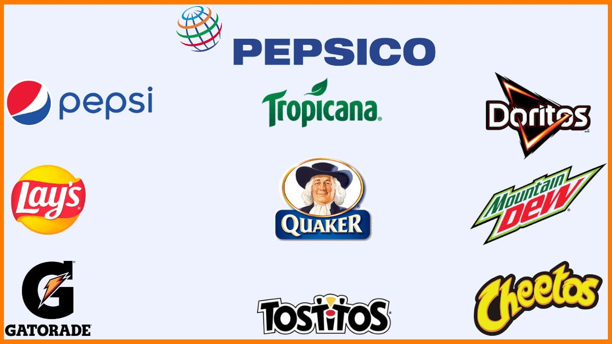
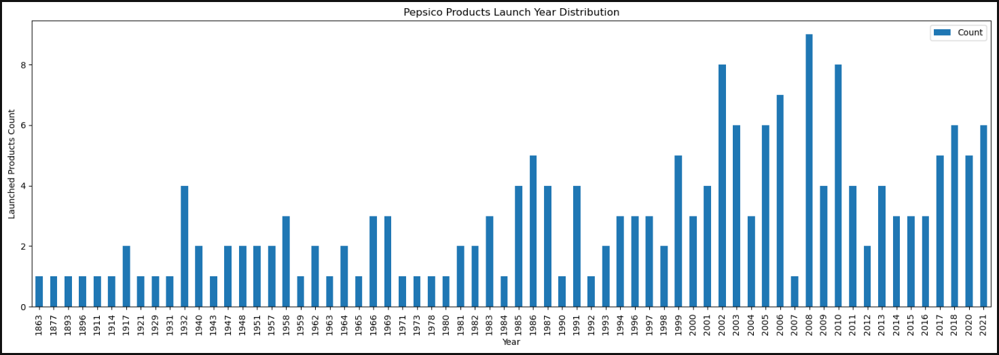
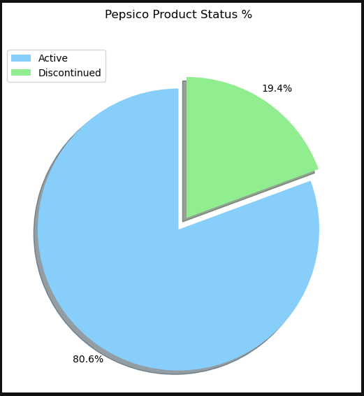
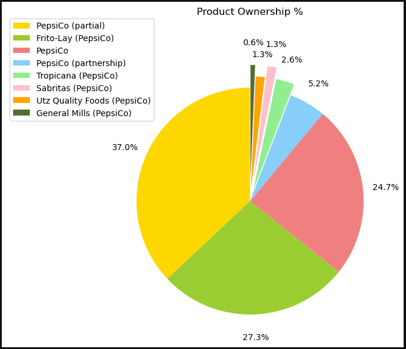
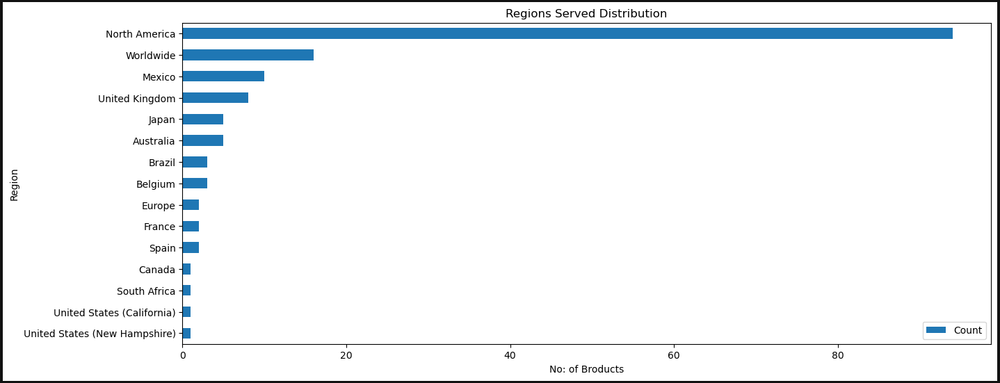
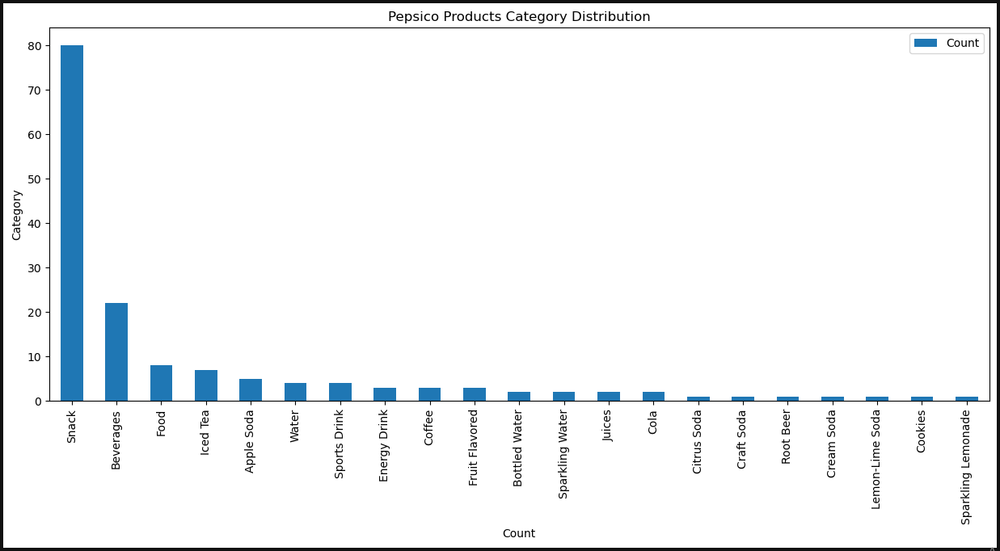

pepsiCo Products Data Cleaning & EDA
Project Objectives
Performing exploratory data analysis to visualize and understand trends and patterns and to present the gross or fails over time.
About the dataset
PepsiCo products Details : 180+ products contains active and inactive products which completely or partially owned by PepsiCo, Data Link HERE, Data usability is 10 and License is CCO:Public Domain, data dimensions (223, 6).
columns discription
Product Name: Name of the product. Year Launched: The year when each product was launched to the market. Status: Whether the product is still produced or discontinued. Region Served: Are where each product is distributed. Category: Classification of each product. Ownership: whether the product is owned directly by PepsiCo or partial or other types of ownership.
Libraries used
import pandas as pd
import numpy as np
import matplotlib.pyplot as plt
data cleaning
1- Duplicates Removal
The 223 row dataframe had 32 duplicate row that were removed.
2- Handling Nulls
The data had no nulls.
exploratory data analysis EDA
As mentiond above that I will perform exploratory data analysis to visualize and understand trends and patterns and to present the gross over time, so let's dive through the visuals made.
1- Products launch year
As seen, products launch year is widely distributed over 60 years or more since the first product was launched at 1863 and the rate of releasing increased since 1980 to be almost every year.
2- Products status
Active products represents 80.6% (154 product) of the total historical products while discontinued products represents 19.4% (37 product).
3- Active products ownership distribution
PepsiCo launched only 24.7% of the products that currently active, while 75.3% of the products are not directly owned by PepsiCo. That reflected the successful aquisitions and partnerships that the management of PepsiCo had.
4- Regions Served
PepsiCo serves varity of regions, however most of the products are served in north america with about 50% of the products but that does not necessarily mean that the most revenue is generated at north america.
5- Products category
You may think all or most of PepsiCo products are beverages as their most famous products are beverages, however 80 product are snacks while beverages are 22.
PEPSICO PRODUCTS DATA FINDINGS
- sample size is 223 row for PepsiCo products from 1863 to 2021. - PepsiCo had 191 product throughout history as a direct sole, partial or indirect ownerships and subsidaries. - Products launch year rate was slow till 1980 where the rate increased to be yearly. - A total of 37 PepsiCo product is discontinued '19.4%' and 154 are active products '80.6%'. - PepsiCo launched 24.7% of its total products, while 75.3% sre throughout aquiring or partnerships. - Historical PepsiCo Inc. was founded in 1965 when the two big companies which are Pepsi-Cola and Frito–Lays was merged. - PepsiCo acquired Tropicana in 1998 and then Quaker Oats and Gatorade in 2001. - PepsiCo is a conglomerate and a multinational manufacturer and supplier of soft drinks, food items, snacks and different types of juices. The company distributes its variety of products to more than 200 countries. - 80 product are served in north america as the most region served through PepsiCo Beverages North America and Frito-Lay North America. - PepsiCo is not only a beverage producer, they manufacture 80 snack products mostly by frito lay.